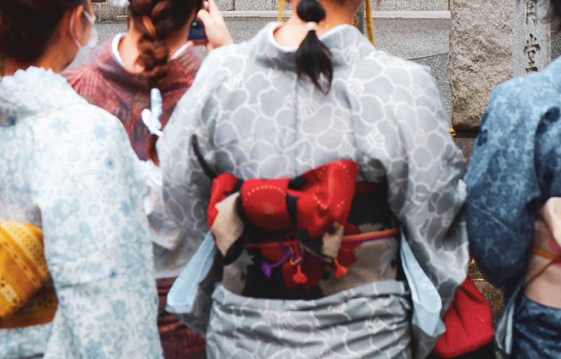
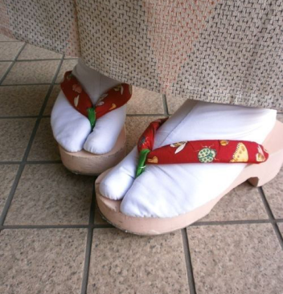
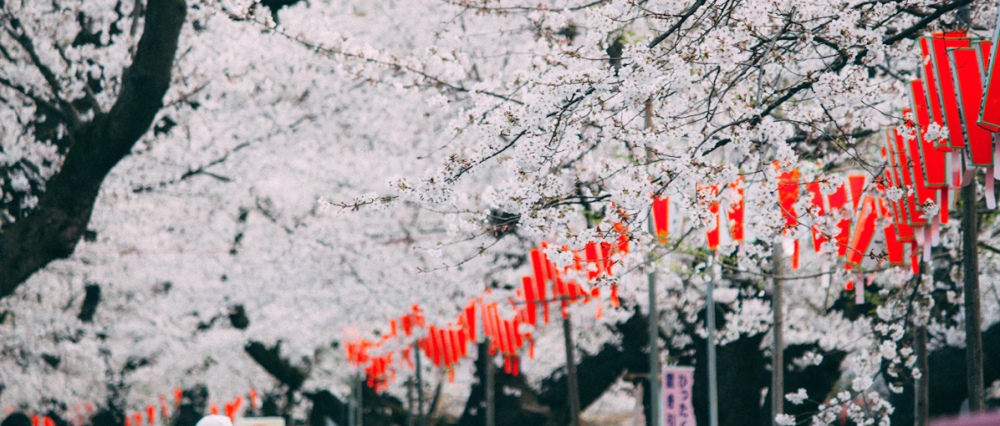
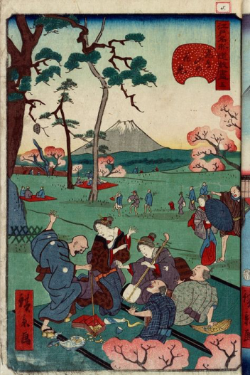
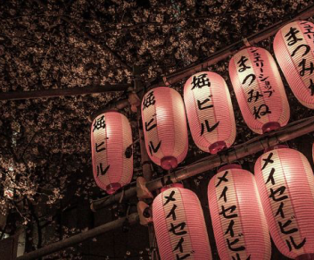
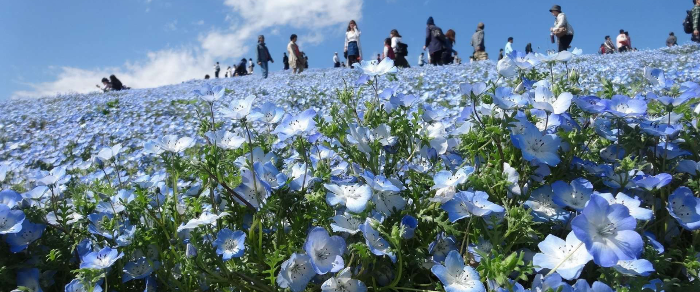

KIMONO A NOLEGGIO 着物レンタル
Ragazze in kimono.
Kimono esposti all’Asakusa Kimono Koto.
Geta e Tabi, le calzature tradizionali giapponesi.
Solitamente inclusi nel servizio di noleggio.
Per celebrare l’arrivo della bella stagione e sentire la cultura giapponese sulla propria pelle, non c’è nulla di meglio dell’esperienza mistica dell’indossare un Kimono.
Il kimono è l’abito tradizionale giapponese, si usa in inverno (in estate lo Yukata) e viene indossato in particolare modo per le cerimonie (come ad esempio matrimoni, lauree, diplomi, etc) e per le feste tradizionali (come ad esempio per l’anno nuovo). È soprattutto nei primi giorni del nuovo anno che la maggior parte dei giapponesi rispolvera i propri Kimono e li indossa per andare al santuario a pregare. Ne esistono tantissimi, e alcuni Kimono, realizzati a mano, sono delle vere e proprie opere d’arte.
Quante volte avete visto le foto delle Geisha, o camminando per Asakusa vi siete imbattuti in ragazze in kimono, e avete pensato “che meraviglia gli abiti tradizionali giapponesi!” e in quel momento vi è balzata l’idea di provarne uno? quando si organizza un viaggio in Giappone però, spesso, si finisce con l’ignorare quest’idea perché “noleggiare un kimono” può sembrare molto difficile, non tanto per il noleggio in sé, quanto poi per la fase successiva: indossarlo.
In realtà esistono molti negozi di “Kimono rental shop” dove è possibile avere tutto il pacchetto completo, ovvero noleggio del Kimono e dei suoi accessori, acconciatura e perfino una persona che vi aiuta ad indossarlo, e fidatevi, fare un triplo nodo alla cravatta, in confronto, è un gioco da ragazzi!
Nel mio ultimo viaggio a Tokyo ho avuto la fortuna di indossare il Kimono per ben due volte, motivo per cui, vi racconto della mia esperienza all’Asakusa Kimono Koto! (http://asakusa.kimono-koto.com/english.html). Ecco alcune dritte che renderanno l’esperienza molto più semplice:
Ora siete pronti a scattare le foto più indimenticabili di sempre (ah, ma prima fate i bagagli!)
HANAMI 花見
Lanterne installate in occasione dell’Hanami al parco di Ueno, Tokyo.
Io sono la descrizione di questa immagine.
Io sono la descrizione di questa immagine.
Le chochin (ちょうちん) illuminano i sakura.
Si sa, la primavera è il risveglio e il fiorire della natura che, dopo un lungo periodo di riposo, torna a mostrarci i suoi colori e le sue meraviglie. Una di queste meraviglie è proprio la fioritura in Aprile dei fiori di ciliegio chiamata in Giappone Hanami.
Hanami (はなみ) significa “osservare i fiori” (da hana= fiori e mi= vedere) ed è infatti il tradizionale evento giapponese che consiste nel celebrare e godere della bellezza dei fiori, soprattutto i fiori di ciliegio (Sakura), osservandone il loro fiorire nelle belle giornate di primavera.
L’Hanami consiste in una festa all’aperto sotto gli alberi di ciliegio che dura una o due settimane. Da metà gennaio ad inizio di maggio i Sakura fioriscono in tutto il Giappone e ad aprile in piena fioritura comincia questo magnifico evento.
Annualmente, la popolazione si prepara all’occasione progettando serate all’aperto (Yozakura よざくら= Sakura Serale) o pic-nic la mattina in parchi come l’Ueno Park.
Come nasce l’Hanami? L’Hanami è un evento nato molti secoli fa. Si racconta che questa usanza abbia trovato le sue origini durante il periodo Nara (710-794), quando la Dinastia Cinese Tang influenzò il Giappone in molti modi differenti portando nel Sol Levante molte tradizioni e costumi. Una di queste tradizioni era proprio quella di godere della bellezza dei fiori in primavera. Sebbene i fiori inizialmente celebrati fossero quelli di prugno (ume うめ), i sakura diventarono molto presto i fiori prediletti da questa occasione proprio perchè la loro bellezza attirava di più l’attenzione della gente. I sakura finirono così, nel periodo Heian, per diventare i fiori più celebrati durante il periodo dell’Hanami.
Fu l’imperatore Saga a voler adottare questa pratica cominciando a tenere feste e balli sotto gli alberi di ciliegio piantati nel giardino del palazzo della Corte Imperiale a Kyoto. A quell’epoca, l’Hanami era un evento riservato solo a persone di alto lignaggio, nobili, samurai che frequentavano la corte e poeti che scrivevano versi che lodavano il fascino e la meraviglia di tale bellezza. Poi con l’arrivo del periodo Edo questa ricorrenza venne aperta anche a tutti gli altri che poterono così festeggiare tale usanza bevendo sakè e mangiando sotto una pioggia di petali rosa.
L’Hanami è una ricorrenza dedicata alla celebrazione della bellezza della natura ma non solo: la fioritura dei ciliegi infatti era il periodo legato al raccolto del riso. Anticamente le persone usavano gli alberi di ciliegio come mezzo per predire la qualità del raccolto di quell’anno e, credendo che i kami risiedessero in quelle piante così belle, portavano ai piedi dell’albero di ciliegio anche delle offerte di ogni genere e pregavano le divinità di concedere loro buona sorte.
Oggi i giapponesi continuano ancora la tradizione dell’Hanami anche perchè questo periodo coincide con l’inizio dell’anno scolastico giapponese. La gente e soprattutto i ragazzi amano raggrupparsi attorno a grandi alberi fioriti tenendo feste e piccoli banchetti o pic-nic all’aperto. Amano passeggiare e fare lunghe camminate nei parchi con il solo scopo di rilassarsi e dedicarsi alla completa meditazione e contemplazione non solo della natura ma anche di sè stessi all’insegna del benessere e del rinnovamento dello spirito. Le passeggiate si prolungano fino a sera tardi dove, grazie alla complicità del bagliore lunare e alle chochin (ちょうちん) accese (lanterne di carta), l’evento diventa un vero spettacolo suggestivo con un’atmosfera che di sicuro giova moltissimo alle giovani coppie di innamorati.
NON SOLO SAKURA 桜に限らず、多様な花の美しさ
Campo di nemophilia blu, Ibaraki.
Giardino di glicini a Kawachi.
In Giappone, la primavera porta con sé non solo la fioritura dei ciliegi, ma anche una varietà di altre belle fioriture grazie alla ricca tradizione botanica e artistica del paese.
Gli amanti della natura possono godersi una vasta gamma di fiori e piante ben curati visitando templi, giardini e parchi in tutto il paese.
Oltre ai rinomati fiori di ciliegio, i giardini giapponesi offrono una piacevole esperienza visiva grazie alla presenza di una vasta selezione di fiori e piante ornamentali. L'arte giapponese dell'ikebana, che consiste nell'arrangiamento floreale, ha contribuito a valorizzare la bellezza e l'importanza dei fiori nella cultura giapponese.
Tra le attrazioni botaniche primaverili più spettacolari del Giappone, vi sono le fioriture annuali del glicine al Parco floreale di Ashikaga, situato nella prefettura di Tochigi, e al Giardino di glicini di Kawachi a Fukuoka. Questi luoghi offrono un panorama mozzafiato, con glicini pendenti di varie tonalità di rosa e viola che formano tunnel floreali spettacolari.
Allo stesso modo, la regione di Ibaraki è famosa per la sua fioritura di nemofila, con campi vasti di questo fiore azzurro che creano un'atmosfera incantata. Il Parco Hitachi Seaside Park è particolarmente popolare per ammirare questo spettacolo primaverile.
Nara è rinomata per le sue azalee in fiore, che colorano i paesaggi con vivaci sfumature di rosso, rosa e bianco. I giardini e i templi della città offrono un'opportunità unica per immergersi nella bellezza di queste fioriture primaverili.
PERCORSO ALPINO DI TATEYAMA KUROBE 立山黒部アルペンルート
Il famoso corridoio di neve di Tateyama in primavera.
La funivia di Kurobe, aperta nel 1954.
Durante i primi mesi della primavera, la maggior parte del Giappone inizia a riscaldarsi, ma non sulle Alpi!
Anche se spesso la Svizzera o l'Italia vengono associate ai migliori panorami montani, il Giappone ha le sue Alpi che offrono viste spettacolari e paesaggi mozzafiato. Attraversando il centro dell'isola di Honshu, gli escursionisti si trovano immersi in un mondo di cime innevate, villaggi pittoreschi e fiumi e laghi panoramici.
Uno dei percorsi escursionistici più rinomati è il percorso alpino di Tateyama Kurobe. Lungo 37,2 chilometri, questo sentiero attraversa il maestoso Monte Tateyama e il Monte Azakawade nelle prefetture di Toyama e Nagano. Il percorso è aperto a metà aprile, offrendo agli escursionisti l'opportunità di esplorare la bellezza naturale e la ricchezza culturale delle Alpi giapponesi.
Il percorso alpino di Tateyama Kurobe è una strada panoramica che offre viste spettacolari sulle montagne circostanti, inclusi i picchi innevati e i rigogliosi boschi di conifere. Lungo il percorso, gli escursionisti possono ammirare cascate impetuose, sorgenti termali naturali e paesaggi mozzafiato che cambiano con le stagioni.
Questo sentiero escursionistico è una vera e propria avventura per gli amanti della natura e degli sport all'aria aperta, offrendo un'esperienza unica per esplorare le meraviglie delle Alpi giapponesi.